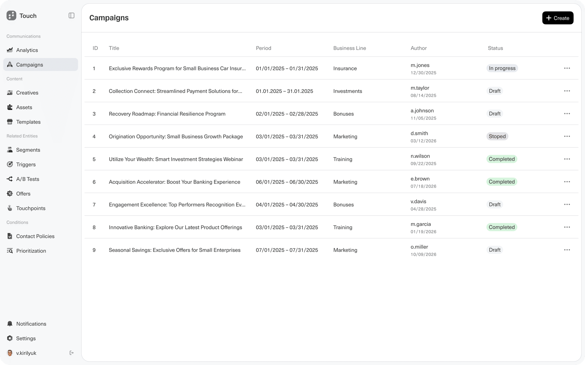
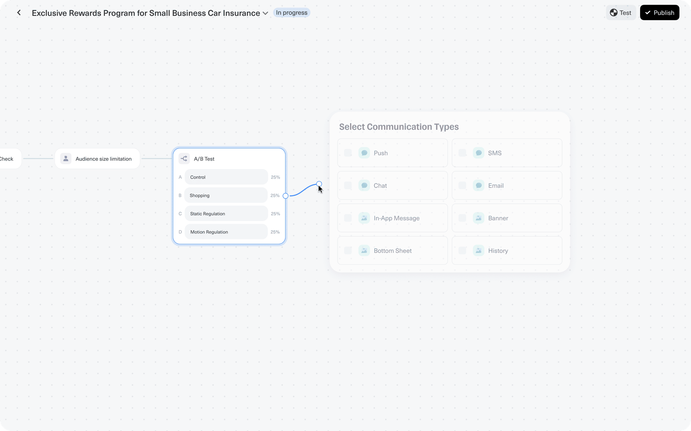

Hero nav
.hero-nav · .hero-nav__link · .hero-nav__sep
Primary page links under the hero. Separate with a muted dot.
◆ Private
Owner-only workspace. Enter the passphrase to continue.
vovakiri/ds
◆ Start
A living reference for every token, component and page pattern used on the portfolio. All previews render the real styles.css, so what you see here is exactly what ships.
15
Color tokens
1
Typeface
12
Components
2
Page patterns
| Principle | What it means in practice |
|---|---|
| Terminal, not template | One monospace family (JetBrains Mono) on a dark graphite canvas. Hierarchy comes from size and weight, not from extra fonts. |
| One accent, one reaction | Cyan --color-accent marks everything interactive or structural. Lime --color-accent-hover is only ever the response to hover or focus. |
| Light by default | Body copy sits at weight 300. Weight 500 is reserved for titles, labels and names. |
| Snapshot, then story | Cases open with scannable facts (highlights) and only then go into narrative and visuals. |
| Geeky labels | Small uppercase labels with tracking, often prefixed with a symbol like ◆. |
| Path | Role |
|---|---|
styles.css | All tokens (:root) and components. Edit tokens there; this page reads them live. |
js/project-lightbox.js | Lightbox behaviour for every .project-figure__image. |
project-page-structure.md | Content rules for case studies (see the Case study pattern). |
design-system/ | This storybook. Unlinked, not indexed, not tracked by analytics. |
◆ Start
A review of styles.css and every page, done while building this system. Colors are now tokenized; the items below are what's left.
72/100
Score
~45
Classes reviewed
9
Issues found
| Category | Defined | Hardcoded values |
|---|---|---|
| Color | 15 tokens | 0 — all 85 color usages now reference tokens |
| Typography | Family + 3 weights | 15 distinct font sizes (11, 12, 13, 14, 15, 16, 18, 20, 22, 24, 32, 44, 48, 64, 96 px), none tokenized |
| Spacing | Gutters only | 16 distinct values; 10, 14, 56 and 72 px sit off the 4/8 rhythm |
| Radius | 3 tokens | Defined, not yet referenced by components |
| Motion | 2 tokens | All transitions use 0.15s ease — consistent, not yet referenced |
| Issue | Where | Recommendation |
|---|---|---|
| 2.90:1 Disabled text on surface | .project-card__soon-label, .project-card__link--muted | Lift --color-text-disabled to ≈ #80878d (4.5:1 on surface), or accept as decorative and make sure the card title carries the meaning. |
| 4.49:1 Muted text on surface | .project-highlights__label, .project-decision__rows dt (11px on #2b2b2b) | A hair under AA. Lighten --color-text-muted to #8e959b — visually identical, passes. |
| 2.89:1 Separator | .hero-nav__sep | Decorative; add aria-hidden="true" to the “·”. |
| No focus ring | .project-back | Only changes color on :focus-visible. Add the standard 2px accent outline like every other link. |
| Issue | Classes | Recommendation |
|---|---|---|
| Webflow leftovers next to BEM | .heading, .text-span, .paragraph, .container-2, .w-container | Rename to .hero__title, .hero__eyebrow, .hero__tags, .container--flush, .container. |
| One pattern, three names | .section-title, .project-block__title, .project-designers__title | All are “small uppercase label”. Extract one .label with --muted / --accent modifiers. |
| Primitives tied to one page | .login-button, .login-input, .login-label | These are the only button/input in the system. Promote to .button, .input, .field-label and keep login-* as aliases. |
| Radius drift | Cards / notes use 4px; highlights, decisions and figures use 0 | Pick one on purpose. Square = “document” surfaces, 4px = “interactive” surfaces is a fine rule — write it down. |
| Off-scale type | 11, 13, 15, 22 px | Converge on a scale: 12 · 14 · 18 · 20 · 32 · 48 · 96 (+ 64/44 responsive). |
◆ Foundations
A dark graphite palette with a single cyan accent. Values are read live from :root in styles.css; badges show WCAG contrast against the page background and the card surface.
--color-accent for anything clickable or for structural block titles.--color-accent-hover only on :hover / :focus-visible.--color-text-muted for meta and labels, not for sentences.--color-text-disabled text on the surface for anything that must be read.◆ Foundations
JetBrains Mono everywhere, weights 300 / 400 / 500. Base: 14px with 1.5 line-height. Large display sizes are tightened with -0.02em tracking; small labels are opened up with 0.06–0.08em and uppercase.
| Token | Value | Sample | Use |
|---|---|---|---|
--font-weight-light | 300 | Campaign creation | Body, leads, meta, captions |
--font-weight-regular | 400 | Campaign creation | Links, nav, small CTAs |
--font-weight-medium | 500 | Campaign creation | Titles, labels, names, buttons |
| Role | Class | Size / LH / Weight | Sample |
|---|---|---|---|
| Display | .heading | 96 → 64 → 44 / 0.8 / 500 | Vova K |
| Case title | .project-title | 48 → 32 / 1 / 500 | Touch |
| Eyebrow / H1 prose | .text-span, .login-title | 32 → 24 → 18 / 1.1 / 300–500 | Product Design Lead |
| Card title | .project-card__title | 20 / 1.2 / 500 | Touch — Campaign creation |
| Lead | .project-lead | 18 → 16 / 1.45 / 300 | One campaign entity instead of ten tools. |
| Decision title | .project-decision__title | 18 / 1.3 / 500 | Set up once for every channel |
| Section label | .section-title | 18 / 1 / 500 · upper · 0.08em | Projects |
| Body | .project-text | 14 / 1.55 / 300 | Research showed the real gap was a missing object. |
| Block label | .project-block__title | 14 / 1 / 500 · upper · 0.06em | Key decisions |
| Small | .project-highlights__value | 13 / 1.45 / 300 | Product Design Lead, Tinkoff |
| Meta / caption | .project-meta | 12 / 1.3–1.4 / 300 | Tinkoff · FinTech · Marketing automation |
| Micro label | .project-highlights__label | 11 / 1.3 / 500 · upper · 0.06em | ◆ Context |
◆ Foundations
Spacing follows a loose 4/8 rhythm. Reading width is capped at 720px, media at 1024px, the page at 1200px.
| Step | px | Scale | Typical use |
|---|---|---|---|
| 2xs | 4 | Label → value | |
| xs | 8 | Meta → title, list items | |
| sm | 12 | Form gaps, caption offset, avatar gap | |
| md | 16 | Paragraph spacing, title → content, mobile gutter | |
| lg | 24 | Grid gap, panel padding, desktop gutter | |
| xl | 32 | Back link → header | |
| 2xl | 40 | Section top, between blocks | |
| 3xl | 48 | Between figures / highlights | |
| 4xl | 64 | Section bottom |
| Token | Value | Applies to |
|---|---|---|
--container-max | 1200px | .w-container, .container |
--media-max | 1024px | Figures, highlights, decisions, .project-content--wide |
--content-max | 720px | Header, blocks, prose — comfortable line length |
--gutter / --gutter-mobile | 24px / 16px | Container side padding |
| Name | Query | What changes |
|---|---|---|
| Tablet | max-width: 991px | Display heading 96 → 64, eyebrow 32 → 24 |
| Mobile | max-width: 767px | Heading 44, single-column grid, 16px gutter, case title 32, decision rows stack, lightbox nav moves to the bottom |
.projects-grid and the team block use repeat(auto-fill, minmax(320px, 1fr)); highlights use minmax(280px, 1fr). No fixed column count — the grid fills what fits.
◆ Foundations
| Token | Value | Sample | Use |
|---|---|---|---|
--radius-none | 0 | Highlights, decision cards, figures — “document” surfaces | |
--radius-sm | 3px | Inline code | |
--radius-md | 4px | Cards, inputs, buttons, avatars, notes — “interactive” surfaces |
One transition for everything: var(--duration-fast) var(--easing-standard) = 0.15s ease, applied to color, background-color and border-color. No movement, no scale. Hover this: hover me
Keyboard focus is always a 2px solid var(--color-accent) outline with a 2px offset (1px on inputs). Hover and focus-visible share the same color change.
◆ Foundations
No icon font. Typographic symbols do the job of icons and keep the terminal feel. Use them as label prefixes, arrows on CTAs and separators.
◆ Components
Links are cyan with no underline and turn lime on hover/focus. Forward links end in →, back links start with ←.
.hero-nav · .hero-nav__link · .hero-nav__sep
Primary page links under the hero. Separate with a muted dot.
.project-back
First element on every inner page. Muted at rest, cyan on hover.
.section-title
Muted uppercase label that names a page section.
◆ Components
Today these only live on the login screen (login-*). They are the system's only button and input — see the Audit about promoting them.
.login-button
Cyan fill, dark text (10.06:1). Lime on hover. Left-aligned inside forms.
.login-form · .login-label · .login-input · .login-error
Label above the input, error below in --color-danger. Toggle the states to preview focus and error.
◆ Components
Home page intro: a light eyebrow (role) over a huge medium-weight name, tags line and nav.
.heading · .text-span · .paragraph · .hero-nav
AI · BIGTECH · FINTECH · MARKETING · ANALYTICS
◆ Components
The whole card is one link. Media on top (1024 / 637), then meta, title, one-to-two-sentence outcome and a “View case →” cue.
.project-card · __media · __image · __body · __meta · __title · __desc · __link
.project-card--soon · __media--placeholder · __soon-symbol · __soon-label · __link--muted
Placeholder for a case that's not ready. Not interactive — render it as a div, not a link.
Short outcome-first description goes here.
In progress
Client · Domain · Type.◆ Components
Layer 1 of a case: back link, meta line, title, one-sentence lead.
.project-header · .project-meta · .project-title · .project-lead
One campaign entity that brings the brief, audiences, creatives, A/B tests and approvals into one place.
◆ Components
Layer 2 of a case: a scannable fact grid. Built as a <dl>. Each value is one to three lines; omit rows rather than pad them.
.project-highlights · __item · __label · __value
Context · Task · Goal · Constraints · Role · Team · Scope · Metrics — optional: Tools, Timeline, Status. Keep Task (the brief) and Goal (how you'd know it worked) separate.
◆ Components
Layer 3 of a case: the story. An accent label, paragraphs, lists and inline code. Wrap blocks in .project-content (720px) or .project-content--wide (1024px, text still capped at 720).
.project-content · .project-block · __title · .project-text · .project-list · .project-inline-code
A campaign had no home, so Jira tickets and links between systems stood in for it.
Variables like {{foreign bank}} were typed by hand.
◆ Components
The signature component of a case. Numbered, titled with the decision itself, and broken into Why / How / Result. Rows stack on mobile.
.project-decision · __index · __title · __rows
Decision 01
◆ Components
Every .project-figure__image on a page automatically opens in the lightbox (js/project-lightbox.js): ← → to browse, Esc to close, caption carried over. Click the images below to try it.
.project-figure · __image · __caption

.project-figure--portrait
For tall screens: natural width, capped at 640px height.

◆ Components
Pixel-art avatars (48px, image-rendering: pixelated) with name, role and optional area of ownership.
.project-designers · __title · __list · .project-designer · __avatar · __info · __name · __role
Vova Kirilyuk
Lead designer
Rita
Product designer
.project-designers--block · .project-designer__area
Use inside a content block when you explain how work was split.
Vova Kirilyuk
Lead designer
Research, concept, design reviews, stakeholder alignment
Serge
Product designer
Scenario canvas and A/B tests
◆ Components
An inline notice with a muted left rule. Used to point from an old version of a case to the current one.
.project-archive-note
Archived version (v1). See the current case →
◆ Components
Styles plain HTML (h1–h3, p, hr, a, strong, em, ul) for long documents like the CV, without per-element classes.
.markdown-preview
Lead Product Designer · AI, FinTech, Marketing & Analytics
Email: kirilyukvv@gmail.com
Remote · Mar 2022 to Present
B2B communication platform. FinTech / Marketing & Analytics.
◆ Patterns
Two sections: hero, then the project grid. Reference: index.html.
| # | Section | Components |
|---|---|---|
| 1 | .section | Hero (eyebrow, name, tags, hero nav) |
| 2 | .section.section-projects | Section title + .projects-grid of project cards |
index.html
◆ Patterns
Snapshot first, story second. Fixed section order so every case feels familiar. Full content rules: project-page-structure.md. Reference: projects/campaign-creation.html.
| Layer | Content | Components |
|---|---|---|
| 1 · Hero | Back, meta, title, lead, key visual | Back link, Case header, Figure |
| 2 · Snapshot | Context, Task, Goal, Role, Team, Metrics… | Highlights |
| 3 · Story | Problem → Research → Role & team → Key decisions → Results | Content block, Team (block), Decision card + Figure pairs |
<section class="section section-project">
<div class="container w-container">
<a class="project-back" href="../index.html">← Back</a>
<header class="project-header">…</header>
<figure class="project-figure">…</figure>
<dl class="project-highlights">…</dl>
<div class="project-content project-content--wide">
<section class="project-block">…</section>
<section class="project-block project-block--wide">
<h2 class="project-block__title">Key decisions</h2>
<article class="project-decision">…</article>
<figure class="project-figure">…</figure>
</section>
</div>
</div>
</section>
<script src="../js/project-lightbox.js" defer></script>
projects/campaign-creation.html